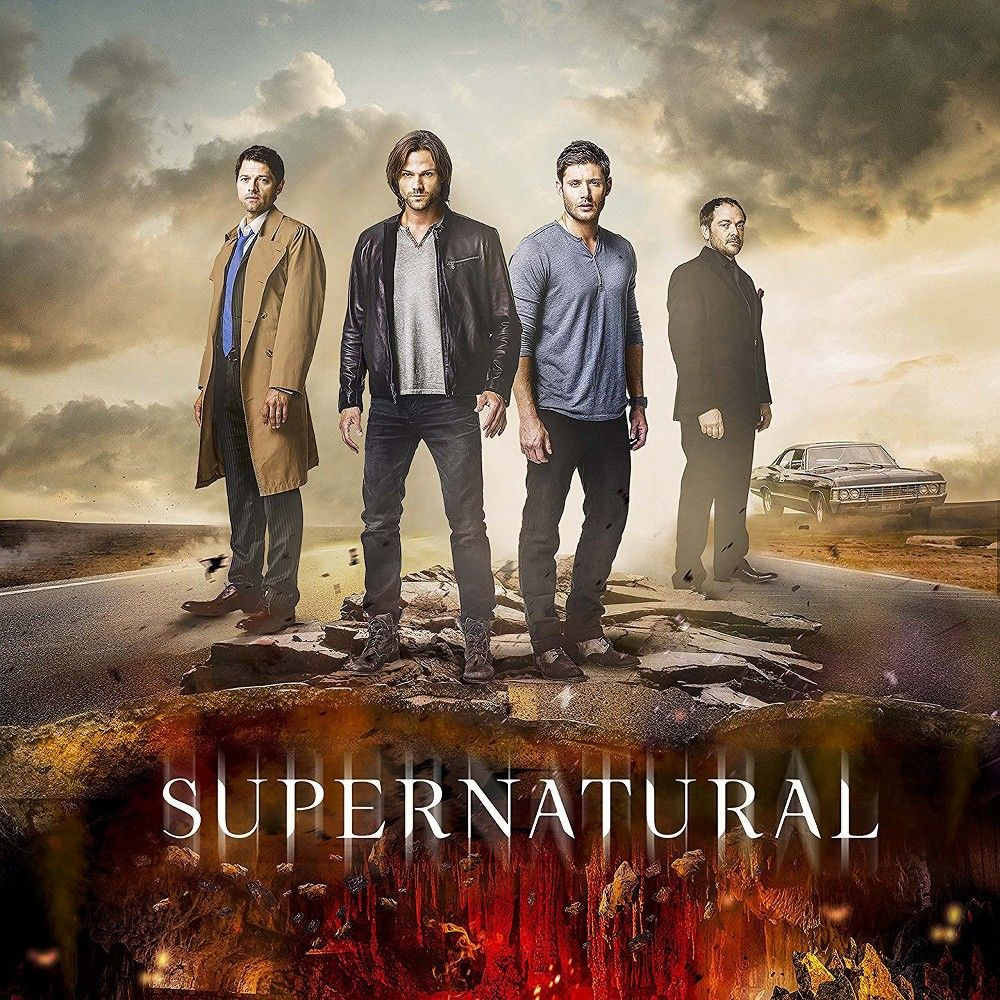

Сверхъестественное
Сериал рассказывает о приключениях братьев Сэма и Дина Винчестеров, которые путешествуют по Соединённым Штатам на чёрном автомобиле Chevrolet Impala 1967 года, расследуют паранормальные явления, многие из которых основаны на американских городских легендах и фольклоре, и сражаются с порождениями зла, такими как демоны и призраки.
Братья Винчестеры